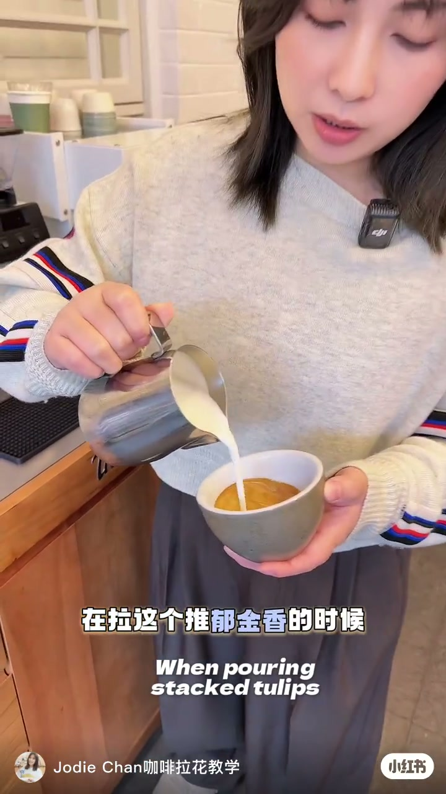
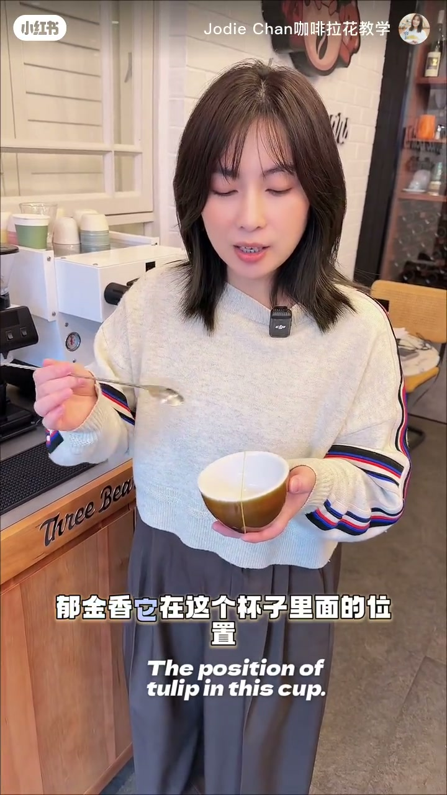
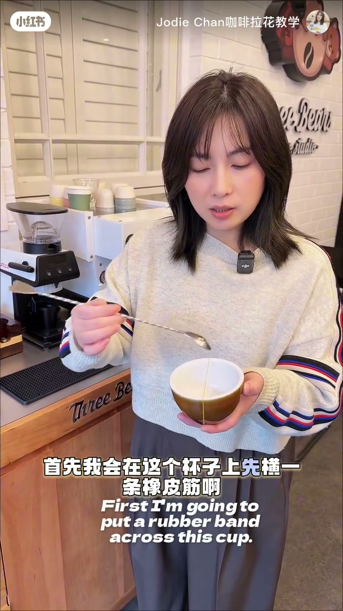
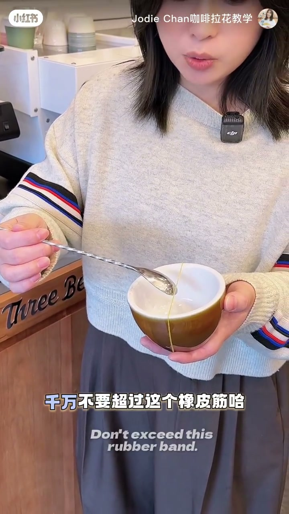
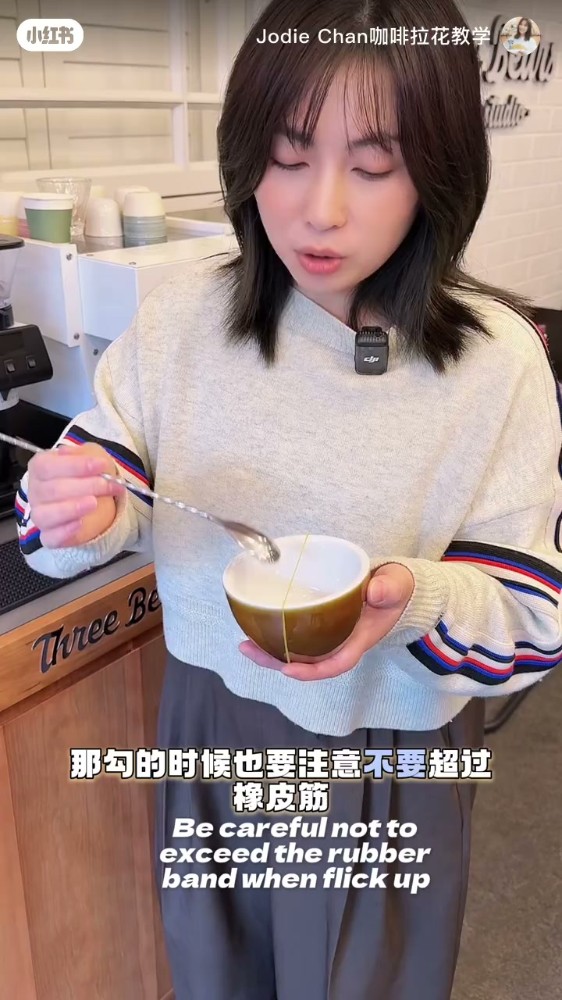
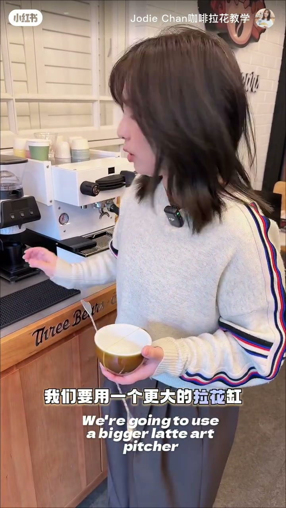
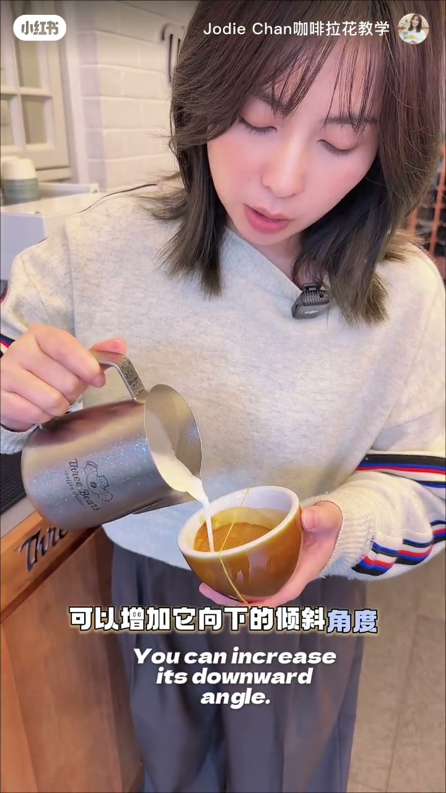
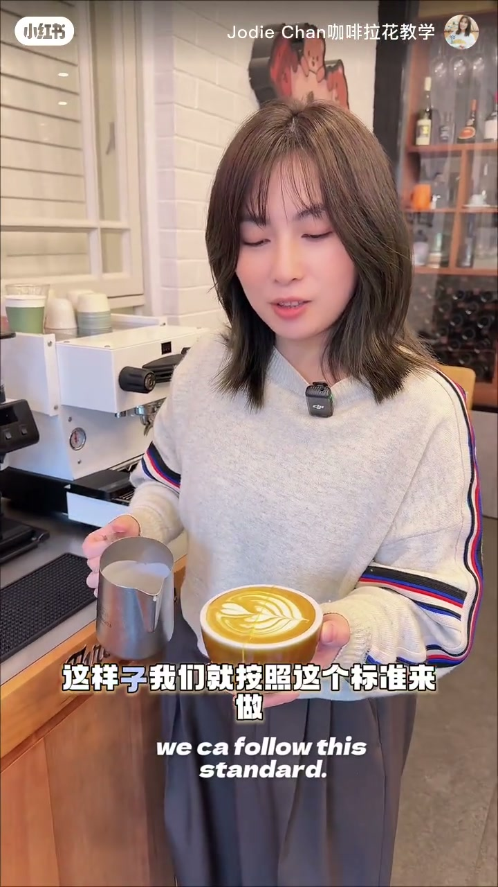

内容要点
一段 1 分半的咖啡拉花教学。UP 主针对新手推郁金香最常见的两个问题——图案太小、变形不完整——给出整套修正方案：先在杯身横一条橡皮筋当「中轴线」圈定推花范围，落点与收勾都限制在中轴线上；再把小拉花缸换成更大缸体、更宽缸嘴的型号，用更大的倾斜角度与更宽的出流让奶泡大胆释放。两大调整配合，郁金香叶片才能推得完整饱满。
知识结构
新手推郁金香的图案常推得很小或变形，没有完整的半圆形。教学目标是做出漂亮的郁金香。
先确认郁金香在杯内的位置，再决定怎么推。
在杯身横一条橡皮筋作为中轴线；推奶泡时从橡皮筋后一点点位置推向中轴线，千万不要超过橡皮筋。
向上勾时同样不要超过橡皮筋，从橡皮筋方向向上勾即可。
图案太小的核心解法是换更大的拉花缸：缸更大、嘴更宽，能帮奶泡大胆释放出来，郁金香就能推得好看。
大奶缸增加向下的倾斜角度，宽嘴帮助释放流量。按这套标准做，郁金香就能做得更好看。
郁金香拉花两大关键：一是用橡皮筋中轴线圈定范围——落点从橡皮筋后一点点推向中轴线、收勾不越线，图案才能完整；二是用更大缸体+更宽缸嘴的拉花缸，靠更大倾斜角度和更宽出流让奶泡大胆释放，解决图案偏小的问题。
00:00-00:26新手通病：郁金香推得小、推得变形
视频开场直击痛点：「有很多新手小伙伴在推郁金香的时候，它的图案都是非常小的，要不然就是这种变形的，没有非常完整的那种半圆形。」这正是多数新手推花失败的两个典型状态。
随后 UP 主给出今天的目标——做一个比较漂亮的郁金香，并强调第一步不是动手，而是「确认一下郁金香它在杯子里面的位置」，先想清楚落点再推。


00:26-00:57橡皮筋中轴线：圈定推花范围
为了让位置判断有具体参照，UP 主在杯身上横一条橡皮筋，「作为它的一个中轴线」。这条线把杯子一分为二，也定义了郁金香叶片的活动范围。
推奶泡时，落点有讲究：「你的点应该是从橡皮筋到后一点点的位置推向它」，从橡皮筋后方一点点开始，向前推到中轴线即可，「千万不要超过这个橡皮筋」。
收尾的勾也受同一规则约束：「勾的时候也要注意不要超过橡皮筋，我们从这里推向橡皮筋的这个方向向上勾就好了。」推与勾都严守中线，叶片才能完整成形。



00:57-00:76换更大拉花缸：让奶泡大胆释放
解决「图案太小」的核心在工具。「如何解决它太小的这个问题呢？是我们要用一个更大的拉花缸。」UP 主举起自己使用的缸对比：缸体更大，而且缸嘴更宽。
更宽的口径带来的是出流的自由：「它可以帮助你把这个奶泡可以大胆的释放出来。」奶泡不再是挤出来的细流，而是能充分铺开，郁金香叶片自然更大更完整。

00:76-00:98原理与成品：倾斜角度与流量释放
UP 主拆解了这套换缸逻辑背后的原理：「更大的奶缸可以增加它向下的倾斜角度」，缸体更大，持缸时向下倾斜的余地更大；「用更宽的嘴可以帮助我们把流量释放出来」，宽嘴保证出流的顺畅与充足。
两个维度叠加，就是郁金香推大的物理基础。视频最后按标准完整演示了一遍推花过程，「你看，这样子我们就按照这个标准来做，那你的郁金香就可以做得更加的好看了」。


完整转录（39段）
以下文本由 Whisper medium 模型自动转录，可能存在少量识别误差，已尽可能修正。
有很多新手小伙伴在推玉金香的时候
它的图案都是非常小的
要不然就是这种变形的
没有非常完整的那种半圆形
那我们今天就来教大家
如何做一个比较漂亮的玉金香
首先我们要来确认一下
玉金香它在这个杯子里面的位置
我们应该要如何去推
首先我会在这个杯子上
先横一条橡皮筋
作为它的一个中轴线
那我们在推的时候
我们要从这个位置
推向这个中轴线就好了
千万不要超过这个橡皮筋
所以你的点应该是从橡皮筋
到后一点点的位置推向它
就可以向上勾
勾的时候也要注意
不要超过橡皮筋
我们从这里推
向橡皮筋的这个方向向上勾就好了
那么如何解决它太小的这个问题呢
是我们要用一个更大的蜡花缸
比如说像我们这个蜡花缸它会更大
而且这个嘴它会更宽
它可以帮助你把这个奶泡
可以大胆的释放出来
这样子你的玉金香
就可以推得非常的好看了
我们用一个更大的奶缸
可以增加它向下的倾斜角度
用更宽的嘴
可以帮助我们把流量释放出来
好
你看
这样子我们就按照这个标准来做
那你的玉金香就可以做得更加的好看了